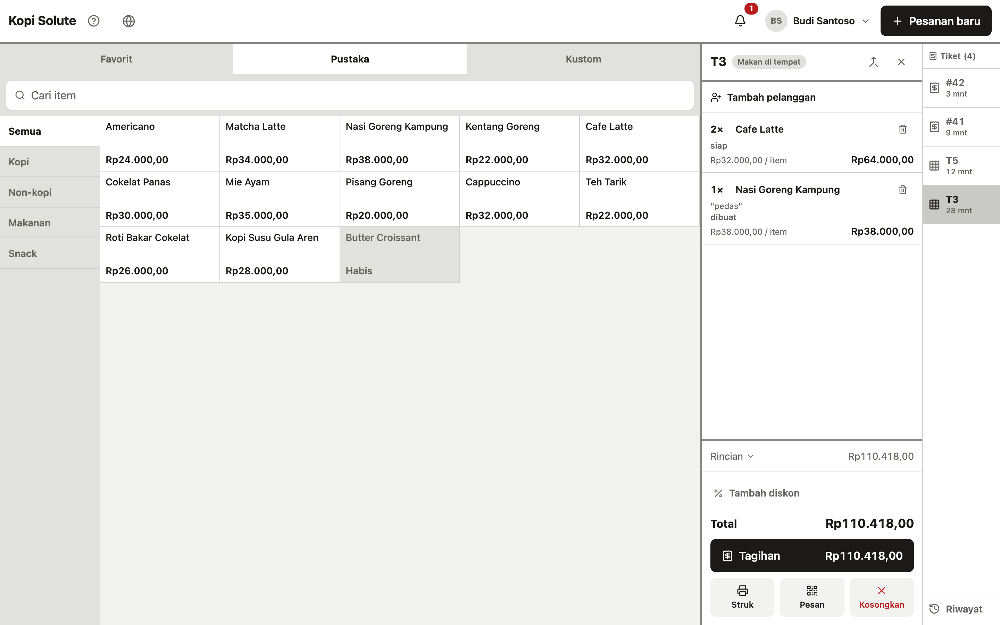
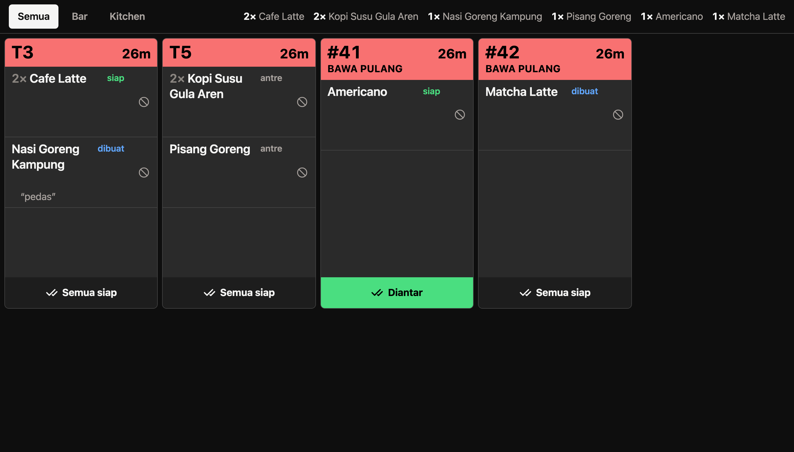
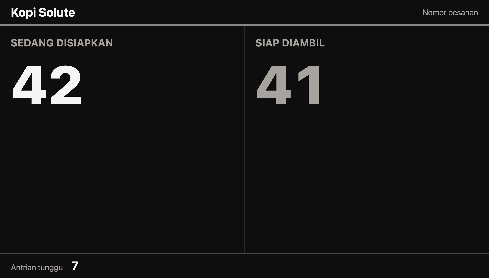
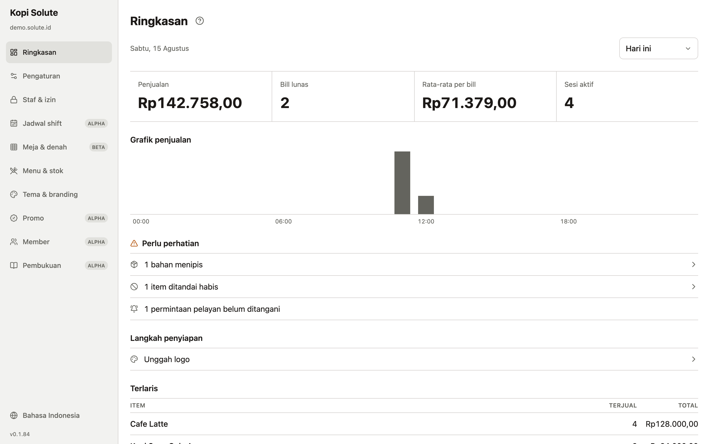
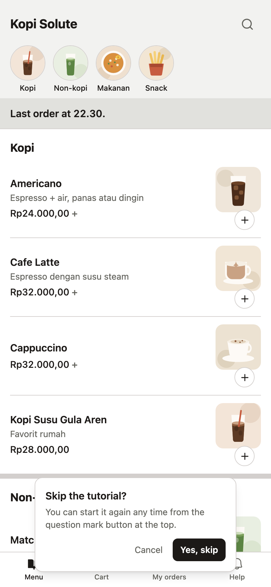

Solute
White-label point-of-sale platform for cafés and restaurants — QR self-ordering, register, kitchen display, and queue TV in one real-time system, each venue themed to its own brand on its own subdomain.
The Idea
Most small venues run their floor on a till that knows nothing about the kitchen, and a kitchen that knows nothing about the queue. Solute is one system behind all of it: a guest scans the QR code on their table and orders from their own phone, the register sees the ticket, the line sees it on the kitchen display, and the customer watches their number move on the queue board. Nobody refreshes anything.
White-Label
Every client is a tenant, not a copy. An organisation owns its venues, and each venue gets its own subdomain themed to its own brand — colours, logo, and heading font — from a single static build. Theming is runtime, over CSS custom properties, so there is no per-client build and no per-client branch. Owners pick from guarded controls rather than writing CSS, and the contrast pairs are derived rather than chosen, so a brand colour can never produce unreadable text.
Surfaces
- Guest ordering from a table QR code, no app install
- Register with floor plan, tickets, split bills, and receipts
- Tableside waiter pad for taking orders at the table
- Kitchen display, routed by station, on a dark surface
- Queue TV for customers waiting on a number
- Self-service kiosk for seating and waitlist
- Admin for menu, stock, staff, shifts, theme, and reporting
Engineering
- Turborepo monorepo on Bun, one shared design system
- Vite, React, and TypeScript across every app
- Supabase with row-level multi-tenancy and realtime over broadcast-from-database
- Money as integer minor units throughout, never floats
- Playwright end-to-end tests and a pgTAP suite on the database
- A local demo mode that swaps only the transport, so the demo runs the real application against an in-memory database
Status
In pilot. The screenshots below come from the local demo mode, running against invented menu and order data.




